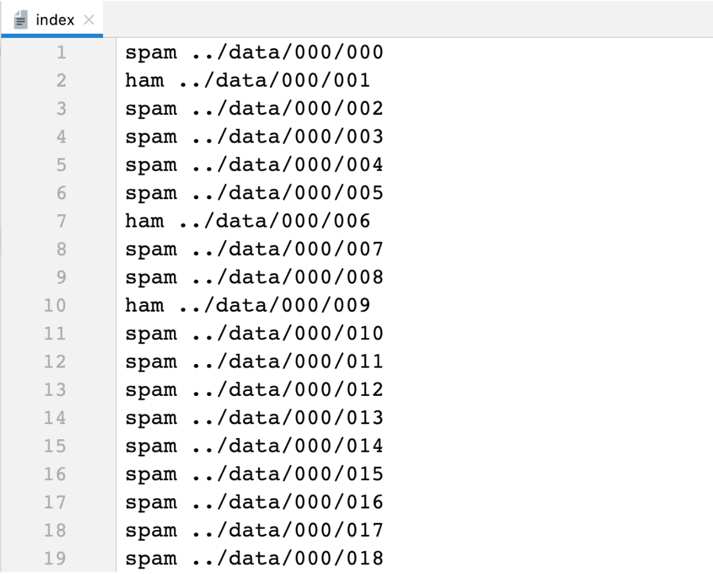

垃圾邮件分类-数据处理
垃圾邮件分类是一种具有广泛应用场景的二分类问题，可以利用机器学习进行解决，市场上已经有很成熟的垃圾邮件分类软件或集成在 Outlook上 的垃圾邮件过滤插件。接下来，我们使用朴素贝叶斯算法训练一个《垃圾邮件分类器》。
1. 数据集介绍
数据集链接: https://plg.uwaterloo.ca/cgi-bin/cgiwrap/gvcormac/foo06
邮件数据存放在 trec06c 目录下，该目录下有 data、delay、full 三个子目录，其中 full 目录下的 index 文件中存储了所有邮件的路径，每一个路径为一个垃圾邮件，如下图所示:

- 第一项为标签值
- 第二项为邮件路径(注意: 这里使用的是相对路径)
其中的垃圾邮件内容如下:
Received: from coozo.com ([219.133.254.230])
by spam-gw.ccert.edu.cn (MIMEDefang) with ESMTP id j8L2Zoqi028766
for <li@ccert.edu.cn>; Fri, 23 Sep 2005 13:01:45 +0800 (CST)
Message-ID: <200509211035.j8L2Zoqi028766@spam-gw.ccert.edu.cn>
From: "you" <you@coozo.com>
Subject: =?gb2312?B?us/X9w==?=
To: li@ccert.edu.cn
Content-Type: text/plain;charset="GB2312"
Content-Transfer-Encoding: 8bit
Date: Sun, 23 Oct 2005 23:44:32 +0800
X-Priority: 3
X-Mailer: Microsoft Outlook Express 6.00.2800.1106
您好！
我公司有多余的发票可以向外代开！（国税、地税、运输、广告、海关缴款书）。
如果贵公司（厂）有需要请来电洽谈、咨询！
联系电话: 013510251389 陈先生
谢谢
顺祝商祺!
所需要用到的程序包:
import pandas as pd
import os
import codecs
import re
import zhconv
import jieba
import jieba.posseg as psg
from sklearn.feature_extraction.text import CountVectorizer
from sklearn.model_selection import train_test_split
import pickle
import time
from tqdm import tqdm
# 将当前目录设置为工作目录
os.chdir(os.path.dirname(os.path.abspath(__file__)))
# 结巴不输出日志
jieba.setLogLevel(jieba.logging.INFO)
2. 邮件数据转换
邮件数据是以单个文件的方式存储，我们将所有的邮件数据从文件读取出来，并转存到一个 csv 文件中，方便后面的数据处理。并且，我们也会对数据划分为训练集、测试集，训练集大概有 5万+左右，测试集 1万+左右。
完整处理代码如下:
def load_email_data():
# 读取邮件目录
filenames, labels = [], []
with open('data/trec06c/full/index') as file:
for line in file:
label, path = line.strip().split()
labels.append(label)
filenames.append(path)
# 读取邮件内容
os.chdir('data/trec06c/full')
contents = []
for filename in filenames:
with open(filename, encoding='gbk', errors='ignore') as file:
content = file.read()
contents.append(content)
# 数据集分割
x_train, x_test, y_train, y_test = \
train_test_split(contents, labels, test_size=0.2, stratify=labels, random_state=42)
# 存储到 csv 文件中
os.chdir(os.path.dirname(os.path.abspath(__file__)))
train_data = pd.DataFrame()
train_data['emails'] = x_train
train_data['labels'] = y_train
train_data.to_csv('data/01-原始邮件数据-训练集.csv')
test_data = pd.DataFrame()
test_data['emails'] = x_test
test_data['labels'] = y_test
test_data.to_csv('data/01-原始邮件数据-测试集.csv')
上面的代码执行成功之后，会在 data 目录下创建两个文件:
- 01-原始邮件数据-训练集.csv
- 01-原始邮件数据-测试集.csv
3. 邮件数据清洗
邮件中数据很杂乱，也包含了很多我们不需要的信息。这一步我们主要对每一封邮件内容进行一些清洗工作，主要包括以下几个方面:
- 去除非中文的内容
- 繁体字转换为简体字
- 分词并根据词性筛选邮件内容
完整处理代码如下:
def clean_data(email):
# 1. 去除非中文字符
email = re.sub(r'[^\u4e00-\u9fa5]', '', email)
# 2. 繁体转简体
email = zhconv.convert(email, 'zh-cn')
# 3. 邮件词性筛选
email_pos = psg.cut(email)
allow_pos = ['n', 'nr', 'ns', 'nt', 'v', 'a']
email = []
for word, pos in email_pos:
if pos in allow_pos:
email.append(word)
# 4. 转换成 str 类型
email = ' '.join(email)
return email
def clean_email_data():
train_data = pd.read_csv('data/01-原始邮件数据-训练集.csv')
emails, labels = [], []
progress = tqdm(range(len(train_data)), desc='清洗进度')
for email, label in zip(train_data['emails'], train_data['labels']):
# 清洗语料
email = clean_data(email)
# 长度为0的数据剔除
if len(email) == 0:
continue
# 缓存清洗结果
labels.append(label)
emails.append(email)
# 更新进度
progress.update()
# 存储到 csv 文件中
train_data = pd.DataFrame()
train_data['emails'] = emails
train_data['labels'] = labels
train_data.to_csv('data/02-清洗后的数据-训练集.csv')
当执行 clean_email_data 函数之后，会在 data 目录下创建 02-清洗后的数据-训练集.csv 文件。
4. 邮件特征提取
我们会将文本数据转换成词频向量，所以需要使用 sklearn 的 CountVectorizer 来实现对文本数据的特征提取工作，并将训练集数据转换成词频向量表示，以便于后面直接能够送入模型进行训练。
完整处理代码如下:
def extract_email_feature():
train_data = pd.read_csv('data/02-清洗后的数据-训练集.csv')
# 提取特征
transfer = CountVectorizer(max_features=10000)
emails = transfer.fit_transform(train_data['emails'])
# 将转换后的训练数据存储
train_data_dict = {}
train_data_dict['emails'] = emails.toarray().tolist()
train_data_dict['labels'] = train_data['labels'].tolist()
pickle.dump(train_data_dict, open('data/03-模型训练数据.pkl', 'wb'), 3)
# 将提取到的特征进行存储
feature_names = transfer.get_feature_names_out()
print('特征数量:', len(feature_names))
pickle.dump(feature_names, open('data/03-模型训练特征.pkl', 'wb'), 3)
函数执行之后，会在 data 目录下创建两个文件:
- 03-模型训练数据.pkl 用于模型训练的数据
- 03-模型训练特征.pkl 用于对测试集数据进行词频向量转换，该文件在模型评估、预测时会用到
注意: 我们提取的特征数量有将近 10 万，维度太大了，此处我们就选择词频最高的前 1 万特征作为训练特征。
整个数据的处理过程在我的笔记本上大概需要 30 分钟左右。 最耗时的部分还是数据清洗那部分，如果想加快速度的话，可以考虑使用更快的 jieba 工具，使用多任务方式加快处理速度。